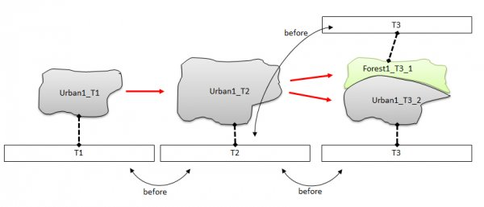
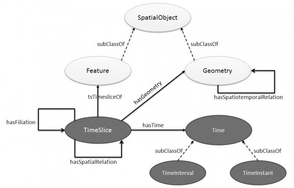
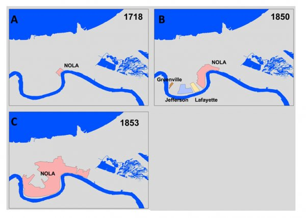
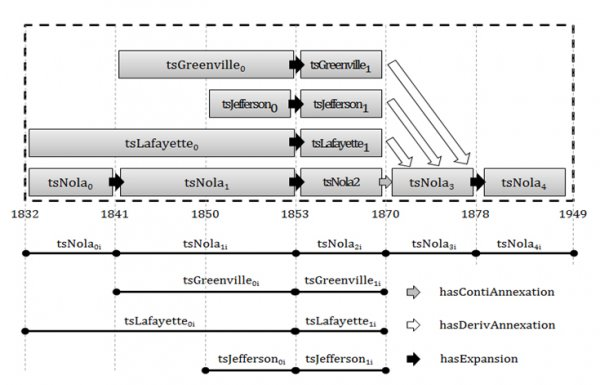

Continuum¶
Présentation du projet¶
Ce projet a fait l'objet de la thèse de Benjamin Harbelot en bourse CIFRE ANRT-DGA.
La modélisation spatio-temporelle¶
Les Systèmes d’Information Géographique se sont peu à peu imposés comme des outils performants pour organiser, représenter, analyser et visualiser des données géographiques. Toutefois, l’intégration d’une dimension temporelle dans les SIG reste un défi de la recherche en sciences de l’information géographique. Dès lors, le développement de modèles spatio-temporels adaptés à l’étude de phénomènes géographiques réels devient un enjeu majeur dans la conception de systèmes d’information dédiés à l’évolution d’entités spatiales. Dans ce projet, nous proposons un nouveau modèle spatio-temporel basé sur une ontologie intégrant les connaissances des experts sur les données géographiques représentées. Les capacités sémantiques proposées dans ce modèle permettent d’assister les experts dans la représentation et l’analyse d’un phénomène spatio-temporel en prenant en compte les informations contextuelles de l’environnement géographique.

Le modèle Continuum permet de gérer l’évolution d’entité spatio-temporelle. Une entité spatio-temporelle est une représentation des entités du monde réel composée d’une identité, de propriétés descriptives et de propriétés spatiales. Tandis que l’identité décrit une sémantique fixe de l’entité, les propriétés descriptives et spatiales peuvent varier dans le temps et constituent la partie dynamique de l’entité. Lorsque l’identité d’une entité varie, on assiste à un type particulier d’évolution où l’entité spatio-temporelle est transformée en une nouvelle entité.
Le modèle Continuum permet de suivre, d'analyser et d'interroger le cycle de vie d’une entité. Le concept d’identité est au coeur de la modélisation. L’identité peut se définir comme le caractère unique d’un objet, indépendamment de ses attributs ou de ses valeurs. C’est le trait qui distingue un objet de tous les autres. Outre l’identité, la modélisation s’appuie également sur les relations de filiation afin de suivre les objets dans le temps.
La relation de filiation pour capturer l'évolutions
La relation de filiation définit le lien de succession qui existe entre les différentes représentations d’un même objet à différents moments du temps. Les relations de filiations trouvent leur intérêt dans le cadre de changements élémentaires tels que des divisions ou des fusions d’entités. D’autres changements spatiaux plus ou moins complexes existent et nécessitent d’identifier les entités "parents" et "enfants". A ce stade, la filiation se base uniquement sur des relations spatiales, c’est pourquoi elle peut être qualifiée de filiation spatiale dans le contexte des changements spatiaux. Ces changements spatiaux peuvent, en outre, révéler des changements sur la nature de l’entité. C’est pourquoi la relation de filiation est intimement liée à la notion d’identité. Cette relation est essentielle pour maintenir l’identité d’une entité qui évolue ainsi que de suivre l’évolution dans le temps. Il est également nécessaire d’identifier les nouvelles entités qui peuvent résulter d’une évolution. La mise en place d’une relation de filiation induit une dépendance à l’identité. Il y a alors deux types généraux de relations de filiation : continuation et dérivation. Dans le premier cas, l’identité est conservée. L’entité continue d’exister, mais a connu un changement. Alors que dans le deuxième cas, une nouvelle entité est créée à partir d’une autre après avoir été soumise à une évolution. Contrairement aux relations de continuation, les relations de dérivation peuvent concerner plusieurs entités en même temps.

L’ontologie comme support de la modélisation spatio-temporelle
Si la relation de filiation est au coeur de la modélisation spatio-temporelle, les entités d’un espace géographique sont susceptibles d’entretenir différentes relations spatiales (relations topologiques, métriques ou directionnelles) ou sémantiques entre elles, et ce, quel que soit l’état de leur évolution. Dès lors, il parait naturel de constater que la modélisation d’un phénomène dans le temps peut être assimilée à un réseau dans lequel les entités et leurs états sont vus comme des sommets tandis que les relations correspondent aux arêtes. Ainsi la modélisation d’un phénomène génère un graphe complexe composé de relations telles que les relations temporelles, sémantiques, spatiales, ou encore des relations de filiation. L’ontologie se présente comme un modèle de données capable de représenter les concepts d’un domaine, ainsi que les relations entre ces concepts. Les concepts au sein d’une ontologie sont organisés dans un graphe permettant de modéliser l’ensemble des relations nécessaires à la modélisation spatio-temporelle. Traditionnellement utilisées pour représenter les éléments d’un domaine de connaissance, les ontologies se fondent sur les notions d’individus, classes, attributs, relations et évènements. Dès lors, les entités peuvent être assimilées à des individus et regroupées au sein de classes définies selon le type d’entité. Les attributs constituent les propriétés, caractéristiques ou paramètres que les entités peuvent posséder et partager tandis que les relations définissent les liens qu’entretiennent entre elles les entités. Enfin, les évènements correspondent aux changements subis par des attributs ou des relations. Les informations disponibles sur des entités à modéliser peuvent être plus ou moins précises, par exemple, une entité de type "étendue d’eau" peut être spécialisée en un type "étang", "lac", "mer", "océan", etc. Une même spécialisation/généralisation peut être observée sur les relations entre les entités. Par exemple, une relation nommée "relation spatiale" entre deux entités peut être spécialisée comme une "intersection", "adjacence", etc. Dans les deux cas, l’ontologie apporte une hiérarchie basée sur la subsomption permettant de représenter ou d'exploiter la connaissance à différents niveaux de détails. Si l’ontologie s’impose comme un support particulièrement complet pour représenter et classifier la connaissance liée à un domaine, elle est également largement utilisée pour raisonner à propos des entités modélisées et présente des capacités d’analyses supérieures aux systèmes d’information traditionnels .
La figure suivante présente le phénomène de conurbation de La Nouvelle-Orléans que le modèle Continuum est en capacité de capturer. Les détails de cette évolution sont présentés dans la figure de la section suivante.

Présentation du modèle Continuum¶
Le modèle Continuum tire avantage des capacités spatiales du standard GeoSPARQL ainsi que des méthodes proposées dans les ontologies de fluents pour représenter l’évolution. En outre, ce modèle permet de représenter le lien de filiation entre les timeslices consécutifs liés à une entité. Le modèle Continuum a été proposé pour répondre au besoin de modélisation des changements qui s’opèrent sur les entités spatiales. Ces changements sont caractérisés par des modifications spatiales (liées à la position ou à l’empreinte spatiale de l’entité), liées à la sémantique ou liées à l’identité des entités. Dès lors, le modèle intègre et distingue les relations liées à l’espace (relations topologiques), au temps (relations d’Allen), à la sémantique et à l’identité (relation de filiation).
La figure suivante présente le phénomène détaillé de conurbation de La Nouvelle-Orléans.

Ces travaux sont financés par la DGA
et le Conseil régional de Bourgogne :
Publications¶
Article dans une revue
- Helbert Arenas, Benjamin Harbelot, Christophe Cruz. Reasoning with Vague Spatial Information from Upper Mesopotamia (2000BC). Procedia Environmental Sciences, Elsevier, 2015, Spatial Statistics conference 2015, 27, pp.Pages 58-65.
- Benjamin Harbelot, Helbert Arenas, Christophe Cruz. LC3: A spatio-temporal and semantic model for knowledge discovery from geospatial datasets. Journal of Web Semantics, Elsevier, 2015.
Chapitre d'oeuvrage
- Helbert Arenas, Benjamin Harbelot, Christophe Cruz. LC3 A Spatial-temporal Data Model to Study Qualified Land Cover Changes. Land Use and Land Cover Semantics, Principles, Best Practices and Prospects, 2015.
- Benjamin Harbelot, Helbert Arenas, Christophe Cruz. Using Semantic Web Technologies to Follow the Evolution of Entities in Time and Space. International Journal On Advances in Intelligent Systems, Freimut Bodendorf, University of Erlangen-Nuernberg, Germany, pp.256 to 265, 2013. 〈hal-00930176〉
Communication dans un congrès
- Benjamin Harbelot, Helbert Arenas, Christophe Cruz. LC3: un modèle spatial et sémantique pour découvrir la connaissance dans les jeux de données géospatiaux. Extraction et Gestion de la Connaissance, Jan 2015, Luxembourg, Luxembourg.
- Helbert Arenas, Benjamin Harbelot, Christophe Cruz. A Semantic analysis of moving objects, using as a case study maritime voyages from eighteenth and nineteenth centuries. the Sixth International Conference on Advanced Geographic Information Systems, Applications, and Services, Mar 2014, Barcelona, Spain.
- Helbert Arenas, Benjamin Harbelot, Christophe Cruz. Implementing a Semantic Catalogue of Geospatial Data.. the Tenth International Conference on Web Information Systems and Technologies, Apr 2014, Barcelona, Spain.
- Benjamin Harbelot, Helbert Arenas, Christophe Cruz. un modèle sémantique spatio-temporel pour capturer la dynamique des environnements. 14 ème conférence Extraction et Gestion des Connaissances, Jan 2014, Rennes, France. pp.39 à 54, 2014.
- Benjamin Harbelot, Helbert Arenas, Christophe Cruz. A Semantic Model to Query Spatial-Temporal Data. The 6th International Workshop on Information Fusion and Geographic Information Systems: Environmental and Urban Challenges, May 2013, St. Petersburg, Russia.
- Benjamin Harbelot, Helbert Arenas, Christophe Cruz. Continuum: A spatiotemporal data model to represent and qualify filiation relationships. 4th ACM SIGSPATIAL International Workshop on GeoStreaming (IWGS) 2013, Oct 2013, Orlando, United States. 〈hal-00869861〉
- Benjamin Harbelot, Helbert Arenas, Christophe Cruz. Semantics for Spatio-temporal "Smart Queries". 9th International Conference on Web Information Systems and Technologies (WEBIST), May 2013, Auchen, Germany.
- Helbert Arenas, Benjamin Harbelot, Christophe Cruz. A Semantic Web Approach for Geodata Discovery. 7th International Workshop on Semantic and Conceptual Issues in GIS (SeCoGIS 2013), Nov 2013, Hong Kong, France.
- Benjamin Harbelot, Helbert Arenas, Christophe Cruz. The spatio-temporal semantics from a perdurantism perspective. In Proceedings of the Fifth International Conference on Advanced Geographic Information Systems, Applications, and Services GEOProcessing, Feb 2013, Nice, France.
Poster
- Helbert Arenas, Benjamin Harbelot, Christophe Cruz. Multidimensional Land Cover Change Analysis using Vector Change and Land Cover Taxonomies. Spatial Statistics: Emerging Patterns, Jun 2015, Avignon, France.